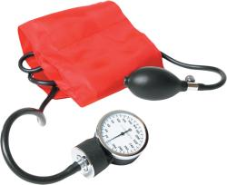
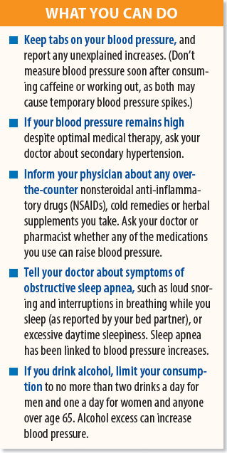
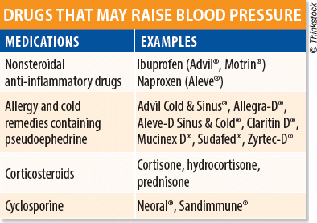

|
Is Something Keeping Your Blood Pressure Elevated? You try to do all the right things for your health. You keep tabs on your blood pressure and visit your doctor regularly. Yet, your blood pressure is elevated, and your physician wants to start you on an antihypertensive medication or add another one to your regimen. Sometimes you may have to look beyond the typical hypertension risk factors and consider a secondary cause of high blood pressure. Several medical conditions, medications and other secondary factors can increase your blood pressure or keep it elevated even if you take three or more blood pressure medications—a condition known as resistant hypertension. Fortunately, identifying and treating these causes may help you get your blood pressure under better control and potentially reduce your reliance on medications. “Especially when there's a pattern of high blood pressure readings despite optimal medical therapy and lifestyle management, secondary causes should be suspected,” says George Thomas, MD, with Cleveland Clinic's Department of Nephrology & Hypertension. “If there's a secondary cause that is identified, it can be treated. If there's a medication interfering with blood pressure control, alternatives could be recommended.” SECONDARY VS. PRIMARY Secondary hypertension is attributable to a medical condition or other specific cause, and may coexist with primary hypertension. Among these secondary conditions is primary aldosteronism, overproduction of the hormone aldosterone by the adrenal glands, resulting in imbalances of sodium and potassium. Less commonly, pheochromocytoma—another condition associated with excess hormone production, usually due to a tumor in the adrenal glands—may trigger secondary hypertension. Kidney damage resulting from chronic kidney disease or narrowing (stenosis) of the arteries supplying blood to the kidneys are other significant causes of secondary hypertension. Other medical conditions that may increase blood pressure include the following:
DRUGS, DRINKS & SUPPLEMENTS “It's not like you have to completely avoid them, but certainly long-term use should be avoided,” Dr. Thomas says. “Most of the time when patients talk about medications in the doctor's office, they talk about prescription medications. They don't necessarily think about over-the-counter medications, so things like NSAIDs and cold medicines aren't mentioned. It's important to bring those to your physician's attention.” Likewise, tell your doctor about any herbal supplements you take, especially those containing black licorice, which contains a compound that may adversely affect blood pressure when taken in large amounts. “In addition to over-the-counter medications, patients should be careful about any herbal remedies,” Dr. Thomas cautions. “It's best when someone wants to begin an herbal regimen to bring it to their physician's attention.” BE ON THE ALERT If your blood pressure is inexplicably high or remains resistant to optimal medical therapy, ask your doctor about secondary hypertension. Also, be aware of the results of any lab testing, particularly your kidney function or low potassium levels, which might signal primary aldosteronism, Dr. Thomas recommends. “Patients should be aware of their general blood pressure numbers and routine blood work, and if they have any questions about them, they should discuss them with their physician,” he advises. “If you have a pattern of controlled blood pressure and you notice it becoming uncontrolled for no good reason, that's another thing to bring to your physician's attention.”
|